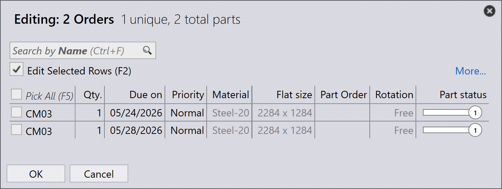

Zamówienia
Zamówienie definiuje, jakie części mają zostać wyprodukowane, w jakiej ilości i do kiedy. Steruje planowaniem i realizacją produkcji w TruSmartCAM. Zamówienia można tworzyć lub importować przy użyciu różnych metod, a następnie można je konwertować na zadania w celu planowania produkcji.
Panel zamówień

|
|


Edycja zamówień
Wybierz jedno lub więcej zamówień i kliknij prawym przyciskiem myszy, aby zmodyfikować wspólne szczegóły zamówienia, takie jak ilość, termin realizacji, priorytet i informacje o kliencie.
Jeśli wiele wybranych zamówień wymaga różnych wartości, użyj opcji Check-out for Editing, aby edytować każde zamówienie indywidualnie zgodnie z wymaganiami.


Wszelkie aktualizacje wprowadzone do zamówień są natychmiast stosowane w bazie danych. Użyj polecenia Usuń, aby usunąć zamówienia z biblioteki zamówień.
| Polecenie Delete usuwa tylko zamówienia. Części powiązane z odpowiednimi zamówieniami nie są usuwane z biblioteki części. |
Planowanie zamówień
Wybierz jedno lub więcej zamówień, kliknij prawym przyciskiem myszy i kliknij Nowe… → Zadanie, aby skonwertować wybrane zamówienia na zadania. Użyj opcji Sortowanie i Filtrowanie, aby pogrupować odpowiednie zamówienia przed utworzeniem zadań.

Po skonwertowaniu zamówień na zadanie:
-
Zadanie jest przenoszone na stronę Zadania
-
Zamówienia są usuwane z listy Zamówienia
-
Standardowy przepływ pracy planowania zadań może być następnie używany do planowania produkcji i zagnieżdżania

Aby uzyskać więcej informacji na temat przepływu pracy planowania zadań, zobacz Auto Plan
Informacje dodatkowe
-
Jeśli zadanie zawierające zamówienia zostanie usunięte, powiązane zamówienia są automatycznie przenoszone z powrotem na stronę Zamówienia gotowe, chyba że zadanie lub część zostały oznaczone jako Ukończone.

-
Zamówienia można dodawać do istniejącego zadania lub usuwać z niego za pośrednictwem okna Edycja zadania zgodnie z wymaganiami produkcji.